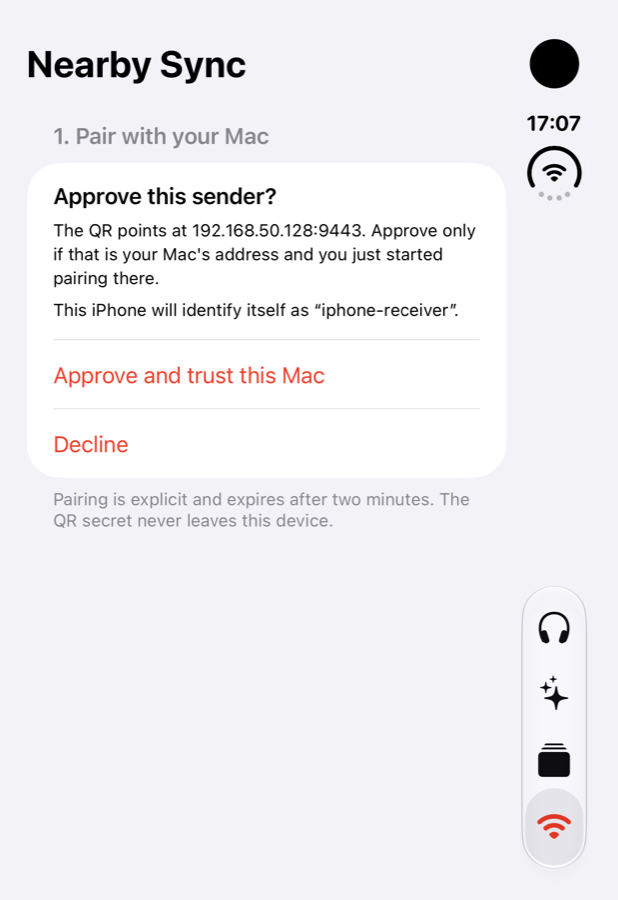
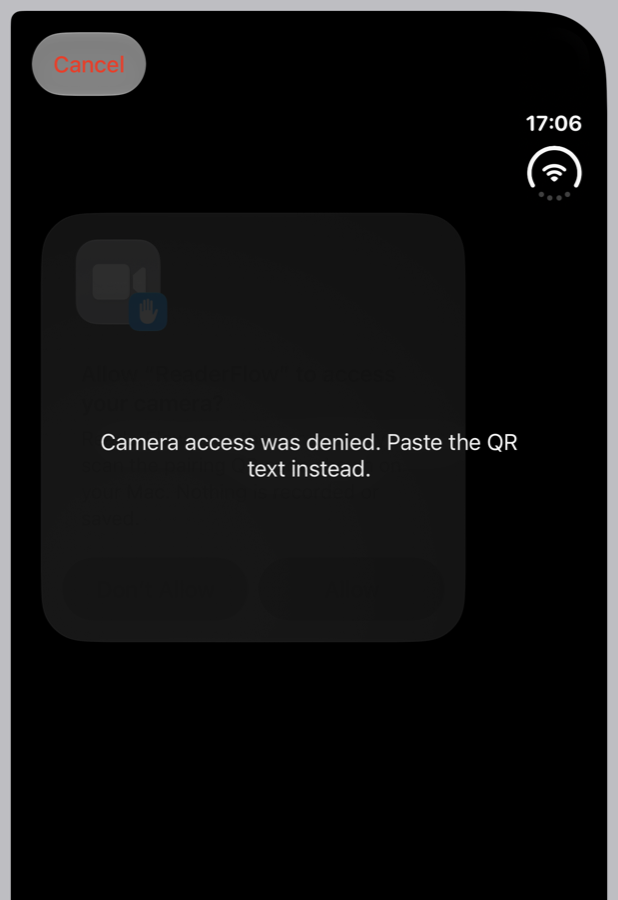
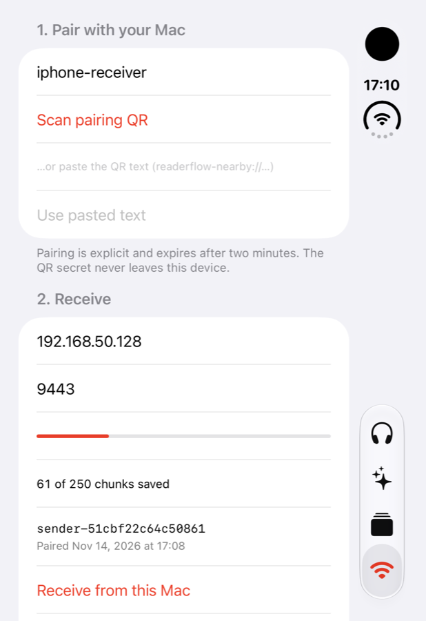
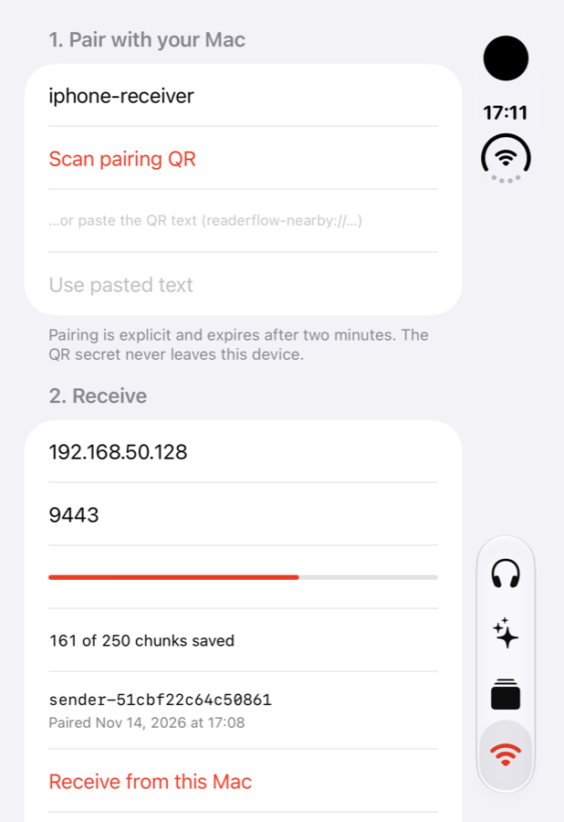
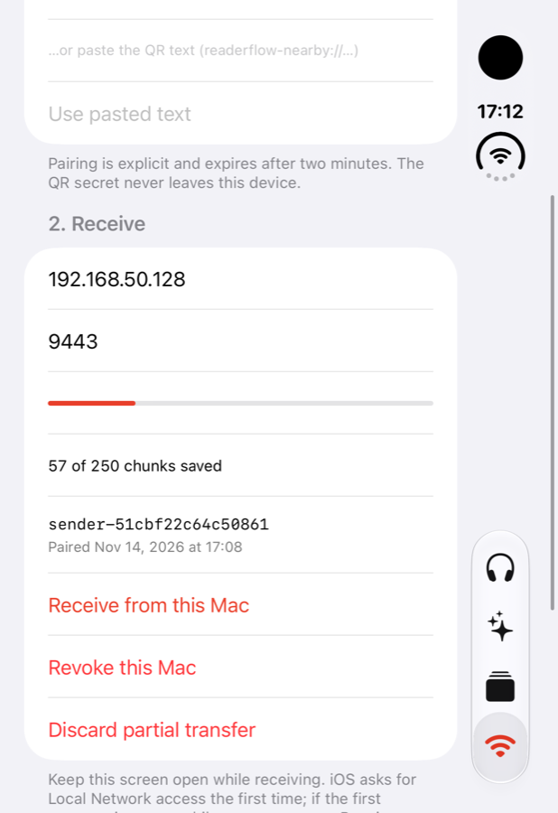
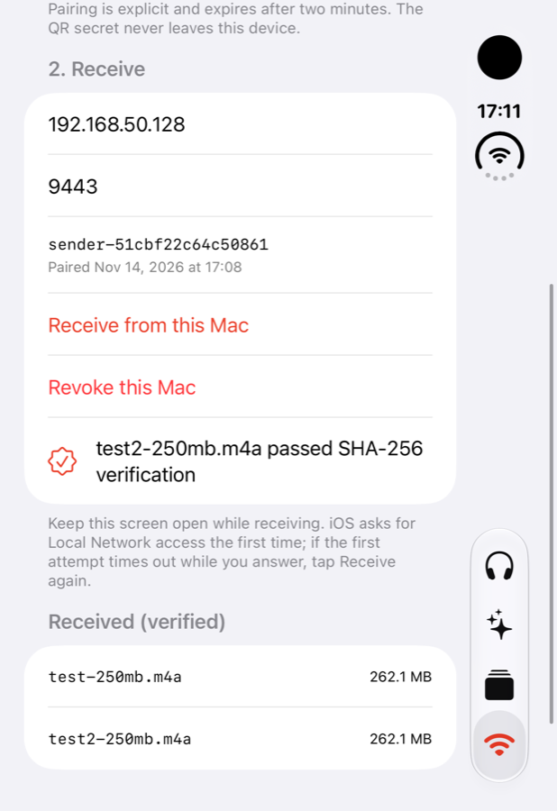
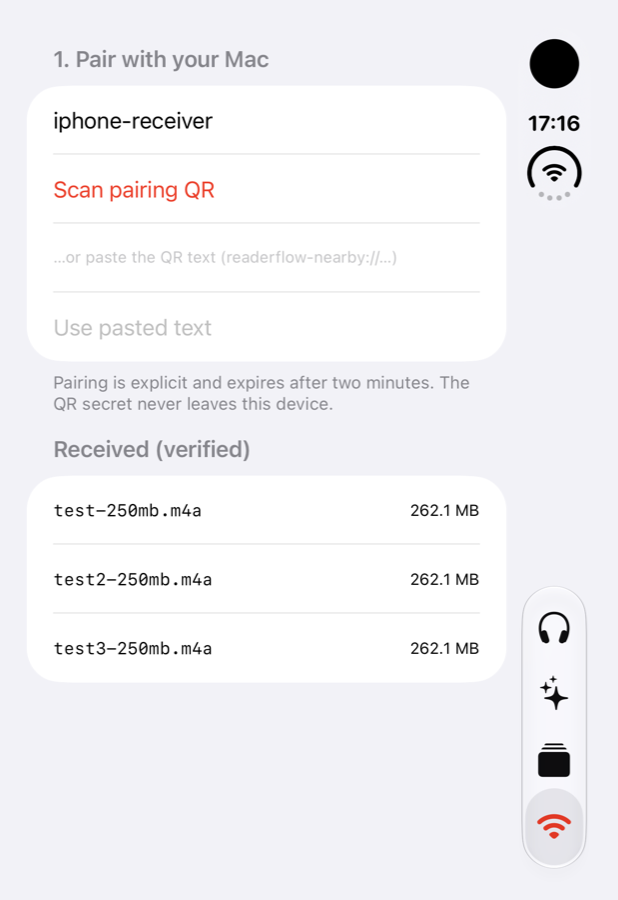

ReaderFlow: building a local-first podcast prototype
ReaderFlow was an attempt to turn the articles I save in Raindrop into short, two-host podcast episodes, generated entirely on my own computer and copied to my phone over Wi-Fi. No cloud model, no API keys, no server. This is the write-up of the finished prototype: what I built, what I verified, and what I found along the way.
Outcome: a finished prototype. The Mac app generates episodes fully locally, the Raindrop sign-in works end to end, and the encrypted, resumable phone transfer is built and tested. The phone side was verified in the iOS Simulator rather than on a physical phone, and the OAuth relay is a design rather than a deployment. That is the scope this prototype was built to, and it is complete.
The idea
A normal Raindrop user should be able to install a desktop app, connect Raindrop in the browser, let a local model write a conversational script from a saved article, hear it narrated by two distinct voices, and later listen offline on a phone. The product rules I wrote on day one were strict: nothing leaves the machine except the OAuth handshake and the original article fetch; no user ever pastes an API key; syncing to the phone is explicit, encrypted and resumable.
I split the unknowns into three feasibility questions: local generation quality, nearby sync reliability, and Raindrop OAuth. The prototype answers each of them at the scope described below.
What I built
A native macOS app in SwiftUI. It extracts readable text from a public URL, asks a local Qwen3 model (via MLX) for a two-host script with a revision pass, then renders it with Kokoro voices into an episode library with resume, seek, speed control and per-episode script view. It was iterated through real use:
- Long sources (a 49-page paper) are summarized section by section instead of silently truncated.
- The two hosts carry a persistent persona that changes by at most one small detail per episode.
- Checks catch a "dialogue" that is really one host monologuing, and fix contractions Kokoro mispronounced (“won't”, “I'm”, “it's”).
- Finished audio is compressed to AAC (about 11.5× smaller); the Qwen model's GPU memory is released after a minute idle.
- A real concurrency bug: two processes rewriting the episode index could silently drop each other's writes, fixed with file coordination and verified with a two-process race.
It is packaged as an ad-hoc-signed build (v0.4.0, attached to the GitHub release; macOS will ask you to approve it on first launch). 26 unit tests cover the text rules and the episode library.
What I verified
| Question | Result |
|---|---|
| Local generation (Mac) | Works. End to end on a laptop. CPU rendering beat the GPU (MPS) path on real dialogue, so CPU is the default. An earlier Piper-based plan was superseded. Mac only; Windows was not part of the prototype. |
| Raindrop OAuth | Works for a single owner. Browser authorization, token exchange, Keychain storage, collection listing and persistence across relaunch all ran against a real registered app. Token refresh after expiry (about two weeks) was not exercised. |
| Nearby Sync | Works in the Simulator. Pairing, encryption, resume and revoke verified between the Mac and an iPhone receiver in the iOS 27.2 Simulator. Physical devices, Android and Windows were not part of the prototype. |
The OAuth surprise
I had assumed a desktop app could do OAuth with a public client. Raindrop's token endpoint requires a client_secret for both the code exchange and the refresh, and documents no PKCE alternative. A secret inside a distributed app is not a secret, so the honest design needs a small relay that holds it. I wrote one (about 70 lines, a Cloudflare Worker that proxies only those two calls and stores nothing) as the design for distributed builds; it is not deployed. For my own use I added a personal mode that keeps my own secret in the Keychain, and that is what signed in.
Testing sync without a second computer
I had one Mac and one iPhone, and the phone-side receiver didn't exist yet. So I built it, then tested it in the iOS 27.2 Simulator against the Mac, with a small proxy in the path to throttle the link and cut it at chosen points. The protocol: a QR code that expires in two minutes, a key agreed from both devices and approved on both, every chunk (1 MiB, so 250 for a 250 MiB file) encrypted and verified before it is written, a ledger saved after each chunk, and a whole-file SHA-256 check before the file becomes visible.


What happened under stress
- Clean transfer: 250 MiB passed the in-app check, and I confirmed the Mac and phone SHA-256 matched and no partial file was left behind.
- Two forced outages at about 25% and 64%: the phone showed 61 and then 161 of 250 chunks saved, and each retry resumed from that count instead of starting over. A retry made during an outage was refused and lost nothing.
- Force-quit plus a Simulator reboot at 57 chunks: the count survived, the resume finished, digests matched, and the half-finished file never appeared as a playable episode.
- Revoke: the phone dropped the sender and the Mac refused to serve it, while already-verified files stayed.





This is simulator evidence, and it is labeled that way throughout. A Simulator shares the Mac's network, so it cannot show iOS's Local Network permission prompt, Wi-Fi client isolation, sleep behavior or real radio loss. It is not a physical-device result.
Things that cost more time than the idea
- Xcode 27.2 stopped building the app: the MLX macro dependency pins an older
swift-syntaxthan the compiler's prebuilt binary supports. Fix: turn off Xcode's prebuilt SwiftSyntax (IDEPackageEnablePrebuilts NO) and install the Metal toolchain. - A build setting pinned to Swift 5 hid a real data-race error in my OAuth client that
swift test(Swift 6) caught. - Raindrop's app form silently refuses to save unless Description and Site are filled in.
- Driving a Simulator by script: screenshots lag the screen by a step, and taps fail while the layout is still animating.
Scope
The prototype covers the Mac generation pipeline, a Raindrop sign-in in single-user mode, and the encrypted, resumable transfer protocol with an iPhone receiver. Its boundaries: Mac only, sync verified in the Simulator, a relay design rather than a deployment, personal distribution, and no usage study. The experiment tooling, written results and technical notes in the repository back every claim on this page.
If you want to build on it
- The generation pipeline (extraction, script, narration, library) is the most reusable part.
- The sync protocol notes and the Simulator rehearsal tools (
experiments/nearby-sync-native-prototype/tools/) show how to test resume and outage behavior without a second device. - There is no license file yet. Add one before reusing the code.